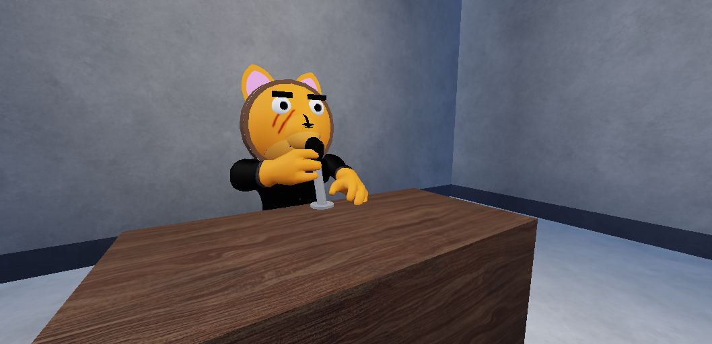

Made by: Daniel Grey
Enterprise Account Rogers ProfileThe Leop virus cure has been made and released for the public to test in this Monday. And shortly after, who has tested the cure has started to have several symptoms such as: Constant coughing, fever, pains in the body and in the joints, shortness of breathe and agressive behavior. With some ones having a uncontrollable will of going to deep caves.
Large part of the volunteers was prisioners, and guard of those prisons say that sereval prisioners that before has a good behavior, after been given the cure, has become agressives, and has started to scratch and trying to break the cells doors to attack others prisioners and guards walking close of them, with some succesfully breaking the doors, and due to that, the prison has needed to invest in more resistent doors.

Photo of the prison cells in SnowVille.
A officer has sayed that a prisioner, called Leon Roger, has breaked the cell door, attacked other 3 prisioners and, and, before they could get them, has escaped the prison and has been mising for days, being found at the deepiest part of a cave, the same that the fungus cordyceps Infectionalis has been found, the police think that he is dead, and for this reason, the cave entrance is blocked fo the public.
After being questioned, the Roger's enterprise owner has sayed: "We alredy know about the occurred and we are working in a way to solve it. The guilty ones has alredy been penalized, there's no reason to worry about it.", after we question they about what are they doing to solve it, he sayed that this are confidencial documents.

Vitor Roger, Roger's owner, talking in conference.